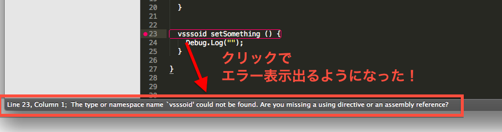

SublimeSocket0.8.0で出来るようになった事まとめ
概要
普通に開発に使う分には、いろんな機能が整った。
メモ程度に。
フィルタがJSONで追加可能
ss@defineFilter:
{
"name": "unity",
"patterns": [
{
"[(]([0-9].*?),.*:(.*)": {
"runnable": {
"showLine": {
"line": "groups[1]",
"message": "groups[2]"
}
}
}
}
]
}
みたいに書けるようになった。
後出しでどんなフィルタ内容にも対応可能。
リアクタの追加
SublimeTextの特定のイベントを監視、一定インターバルで指定APIを実行可能になった。
ss@setReactor:
{
"target": "targetWebSocketClientIdentity",
"event": "on_selection_modified",
"selector": {
"playRegions": {
"view": "will be replace to specific view",
"target": "targetWebSocketClientIdentity",
"showatstatus":true
}
},
"replacefromto": {
"view": "view"
},
"interval": 100
}
イベントから予約済みAPIへのパラメータ代入を実装したけど、うーん名前がわかりにくい。
replacefromtoとか。これからリファクタリングする。replace記号でも定義するか？ めんどうな、、
上記で、カーソルがどこかを選択(位置確定)すると、playRegions APIが実行される。
範囲系APIの追加
SublimeText上で表示される、エラーとか明示用のRegion(ハコ)に対応するAPI。
ハコ敷設時、特定の要素をセットできる。
要素は、上記のリアクタと組み合わせる形で発生させられる。
エラー検出からRegionをセット → Regionがある行をクリック →
リアクタ発生 → Regionに入っている要素を取り出し、リアクタ内にセットされたAPIを実行
Unity用だと、「とりあえず要素をそのまま表示する」APIを実行している。
内容変更を逐次、WebSocketで外部に送る事も可能。
結果として
こんなかんじにエラー表示が出来るようになった

ここまでで、ENSIMEができることの半分くらいが出来るようになったと思う。
あとは、稼働中プログラム値のリアルタイムオーバーレイとかも可能。 WebSocketついてるから、外部連携の自由度が良い。
UnityつかいつつScalaでの全力に向けて遊ぶ。
TODO
API一覧書く